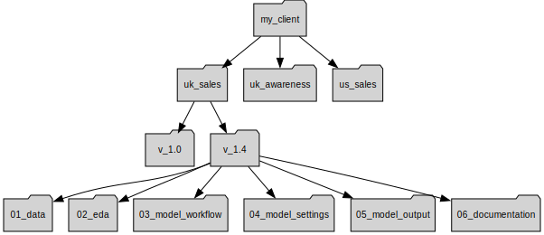

Project Setup¶
This section will touch on two key components of the package: folder setup and data structure of a typical MMM project. Understanding the folder structure will help users understand better on where certain model parameters and data are ingested, and where the results from the MMM models can be found, allowing users to be more efficient in working with the package. In the data structure section, we will talk about how the data for an MMM project should be structured. Having a standardised approach to the data structure will decrease unnecessary errors significantly.
Folders Setup¶
This is the initial phase where (in your workflow template) you define the modeling scope, select the business KPIs (e.g., revenue, conversions), and determine the modeling granularity (e.g., weekly, country-level). The workflow will guide you to create a project folder structure and set configuration files or paths for your inputs and outputs.
Once you run the project_init() function, a new folder structure will be created on your machine. This structure is designed to help organize your data and outputs so that the package can easily access the files it needs to run the analysis.
Folders and File Overview¶
The following files and folders are automatically created by the package during project initialization. They provide a standardized structure to support a smooth and reproducible modeling workflow.

This folder contains all raw and pre-processed input data used in the modeling process. This may include media spend, sales or conversions, control variables (e.g., pricing, promo), seasonal flags, and any other relevant time-series data. Ideally, files here are versioned and read-only, ensuring consistency across runs.
The Exploratory Data Analysis (EDA) folder holds visualizations, summary statistics, and diagnostics used to understand and validate the input data before modeling.
Note: this feature is still under development
This folder contains a copy of the main R markdowns that run the modeling pipeline. These scripts handle tasks such as initializing the model object, setting up the model, transforming variables, running the estimation, and generating outputs. Think of this as the "engine room" of your workflow.
This folder stores configuration files (mostly .CSV) that define model inputs and hyperparameters. These settings include which variables are included, prior distributions, transformation settings (e.g., adstock, saturation), and modeling time windows.
Input Files¶
These are the key files you'll interact with throughout the modeling phase. They form the foundation of the workflow, guiding what data will be transformed, analyzed, and ultimately modeled.
The Model Setup file is the first configuration you'll edit when starting your analysis. It defines key parameters that control how the model is structured and what data is used. These settings guide both model estimation and response curve analysis.
This file is essential for configuring your analysis and should be carefully reviewed and updated before running any model.
| Parameter | Explanation | Mandatory_Field |
|---|---|---|
| ModelForm | Specifies the regression model form. Options include 'lin_lin' (linear), 'log_lin' (log-transformed response), and 'mc_lin' (mean-centered transformed response). | Yes |
| Panel | Indicates whether the model supports panel data structure. Set to 'Y' to ensure compatibility, even for non-panel use cases. | Yes |
| Time | Name of the time-related column in the dataset, typically representing months or weeks. | Yes |
| Geo | Not currently in use. | No |
| CS | Defines the main cross-sectional unit used in panel models (e.g., product, market, or vehicle). | Yes |
| CS2 | Optional second-level cross-sectional identifier (not currently available) | No |
| BeginDate | Start date for the analysis period. Format should be DD/MM/YYYY. | Yes |
| EndDate | End date for the analysis period. Format should be DD/MM/YYYY. | Yes |
| numSubModel | Optional. Specifies how many sub-models are linked to the main model. | No |
| Submodel_Link1 | Name of the parent variable in the main model used to link to the first sub-model. | No |
| Submodel_Link2 | Name of the parent variable used to link to the second sub-model. | No |
| Submodel_Link3 | Name of the parent variable used to link to the third sub-model. | No |
| subModel1 | Name or label of the first child sub-model to be used in hierarchical modeling. | No |
| subModel2 | Name or label of the second child sub-model to be used in hierarchical modeling. | No |
| subModel3 | Name or label of the third child sub-model to be used in hierarchical modeling. | No |
| SimStart | Start date for the simulation period used in response curve generation. Format: DD/MM/YYYY. | Yes |
| SimEnd | End date for the simulation period used in response curve generation. Format: DD/MM/YYYY. | Yes |
| Mroi | Increment size used to simulate changes in media investment when generating response curves. | Yes |
The Variables file defines all variables used in the model along with their inclusion status and transformation settings. This file gives you full control over how each variable is treated in the modeling pipeline.
This file is critical for customizing model inputs and ensuring each variable is preprocessed appropriately for the analysis.
| Column_Name | Explanation | Workflow_Component |
|---|---|---|
| Orig_Variable | Original name of the variable as it appears in the raw dataset | All functions |
| Trans_Variable | Name to use for the variable after any transformation | All functions |
| AggregateVariable | Indicates a grouping variable for aggregating similar sub-variables | Decomposition |
| Variable_Type | Specifies the type of variable (e.g., Dependent, Trend, Default) | Decomposition |
| Include | Binary flag (1/0) indicating if the variable should be included in the model | All functions |
| VaryBy | Specifies if the variable coefficient varies by a grouping (only for panel data) | Coefficients estimation |
| Transform | Whether the variable should be transformed (Y/N) - Keep this as default. | Transformation |
| TransformType | Type of transformation (e.g., adstock, log, lag, saturation) | Transformation |
| Lag | Number of periods to lag the variable | Transformation |
| Scale | Scaling factor to adjust the variable values | Transformation |
| Effective | Ad Response transformation (tbd) | Transformation |
| Recency | Ad Response transformation (tbd) | Transformation |
| Decay | Decay rate for adstock or adr (value between 0 and 1; a higher value means faster decay). | Transformation |
| Period | Ad Response transformation (tbd) | Transformation |
| Window | Size of the moving window (e.g., for rolling averages) | Transformation |
| Trim | Currently not in use | Transformation |
| Length | Maximum number of time periods over which advertising memory can persist. | Transformation |
| Peak | Indicates the peak point in a adstock transformation. | Transformation |
| AT_Divisor | Arc-Tangent parameter (rarely used) | Transform (for diminising returns) |
| NE_Divisor | Negative Exponential parameter (rarely used) | Transform (for diminising returns) |
| A | Ceiling of ABC curve (keep as 1) | Transform (for diminising returns) |
| B | Parameter of ABC curve (typically set between 20–80% of the variable’s maximum value.) | Transform (for diminising returns) |
| C | Parameter of ABC curve (If c > -1, the function is logarithmic; if c < -1, the function follows an S-shaped curve). | Transform (for diminising returns) |
| Max_Grps | Not in use | Transformation |
| Prior_Mean | Prior mean for Bayesian estimation | Coefficients estimation |
| Prior_SD | Prior standard deviation for Bayesian estimation | Coefficients estimation |
| PriorSD_Adj | Adjustment factor for prior standard deviation | Coefficients estimation |
| Sign | Not in use | nan |
| Override | Not in use | nan |
| Simulate | Indicates if the variable is used for response curves | Response Curve |
| RC_Shape | Defines the shape of the response curve for the variable | Response Curve |
| Explore_correlation | Whether to include the variable in correlation diagnostics | EDA |
| Explore_transformation | Whether to explore alternate transformations during modeling | EDA |
| Spent_Variable | Reference to the spend version of the variable (if separated from exposure) | Response Curve |
| Cost_per_unit | Unit cost of the media (used in efficiency calculations) | Response Curve |
| Source | Metadata field indicating where the variable came from | Transformation |
| TimeUnit | Time granularity of the variable (e.g., weekly, monthly) | Transformation |
This folder captures all outputs generated by the model, such as contribution decompositions, model diagnostics, or a copy of the model object. It may also include visual reports or summary tables. Outputs here are often used to support stakeholder decision-making.
This folder is created for the users to store documentation about the project: modeling rationale, decisions, assumptions, meeting notes, and final deliverables. It might also contain markdown files, slide decks, or PDFs that explain the project flow, outcomes, and business recommendations.
This file contains a unique identifier for the model run. It helps track and reference a specific set of modeling configurations, inputs, and outputs, especially in workflows that involve multiple iterations or parallel experiments.
The model_id.txt file typically includes a short string that is automatically generated by the pipeline.
Why it's important:
- Ensures traceability between model inputs and outputs.
- Allows consistent naming of output files.
- Makes collaboration easier by giving analysts a common reference point.
Typical usage in the pipeline:
- Read in during model initialization to tag outputs.
- Stored alongside outputs and logs.
Data Structure¶
Before diving into model workflow, it's important to clarify how data should be structured, as this affects how the package processes inputs and ensures consistent behavior across different types of datasets — whether panel or non-panel.
Panel vs. Non-Panel Data¶
In the context of Marketing Mix Modeling (MMM), panel data refers to datasets that contain observations across multiple units (such as regions, brands, or stores) over time. Each unit has its own time series, allowing analysts to capture both temporal dynamics and cross-sectional variation. This can improve model robustness by leveraging patterns across similar entities and supporting more generalizable insights.
By contrast, non-panel data (also known as time series or aggregate data) includes a single stream of observations over time, typically representing national-level performance or a single entity.
While simpler to manage, non-panel data limits the ability to control for unit-specific effects and can lead to more fragile estimates if the dataset is small or noisy.
| Date | Car Model | Orders | TV Spend | Radio Spend |
|---|---|---|---|---|
| 2022-01-01 | Alpha | 91 | 872.13 | 2916.01 |
| 2022-01-01 | Beta | 154 | 2412.97 | 3266.66 |
| 2022-01-01 | Delta | 115 | 3973.21 | 1752.63 |
| 2022-01-01 | Gamma | 96 | 175.27 | 4847.49 |
| 2022-01-08 | Alpha | 71 | 7417.53 | 3864.92 |
| 2022-01-08 | Beta | 151 | 1462.11 | 1039.69 |
| 2022-01-08 | Delta | 165 | 3163.78 | 3402.06 |
| 2022-01-08 | Gamma | 78 | 9267.57 | 2904.78 |
| 2022-01-15 | Alpha | 107 | 9244.82 | 2923.08 |
| 2022-01-15 | Beta | 91 | 2707.85 | 4926.91 |
Note: Car Model is the panel identifier used to group data by vehicle type.
Why Use a Panel Format¶
Our modeling approach standardizes how data is treated by assuming a panel structure for all input datasets. This provides consistency in how models are built, regardless of the original data format.
If a dataset is not naturally a panel (i.e., it contains only a single time series), we automatically add a grouping column to create a "panel of one". This ensures that all processing and modeling routines — such as decomposition, contribution analysis, and cross-validation — can be applied uniformly, without needing special handling for different data types.
| Date | Panel Col | Orders | TV Spend | Radio Spend |
|---|---|---|---|---|
| 2022-01-01 | client_name | 151 | 3550.62 | 4911.53 |
| 2022-01-08 | client_name | 129 | 5245.67 | 2383.74 |
| 2022-01-15 | client_name | 103 | 9522.32 | 1516.49 |
| 2022-01-22 | client_name | 151 | 7284.52 | 4516.02 |
| 2022-01-29 | client_name | 150 | 6993.12 | 4187.69 |
| 2022-02-05 | client_name | 111 | 5301.55 | 1624.52 |
| 2022-02-12 | client_name | 125 | 8073.22 | 4493.61 |
| 2022-02-19 | client_name | 155 | 2835.41 | 1832.87 |
| 2022-02-26 | client_name | 109 | 8590.96 | 4512.57 |
| 2022-03-04 | client_name | 143 | 826.44 | 2390.48 |
Note: Panel Col identifies groups when panel structure is required. If the data isn't in panel format, this will be generated automatically.
Advantages of a Unified Approach¶
Treating all datasets as panels simplifies the architecture and improves model scalability. It allows us to apply the same logic for feature engineering, constraints, and optimization routines — whether the user provides a multi-brand dataset or a single-country time series.
This also makes it easier to expand to true panel use cases in the future, as the underlying structure already supports multiple groups.